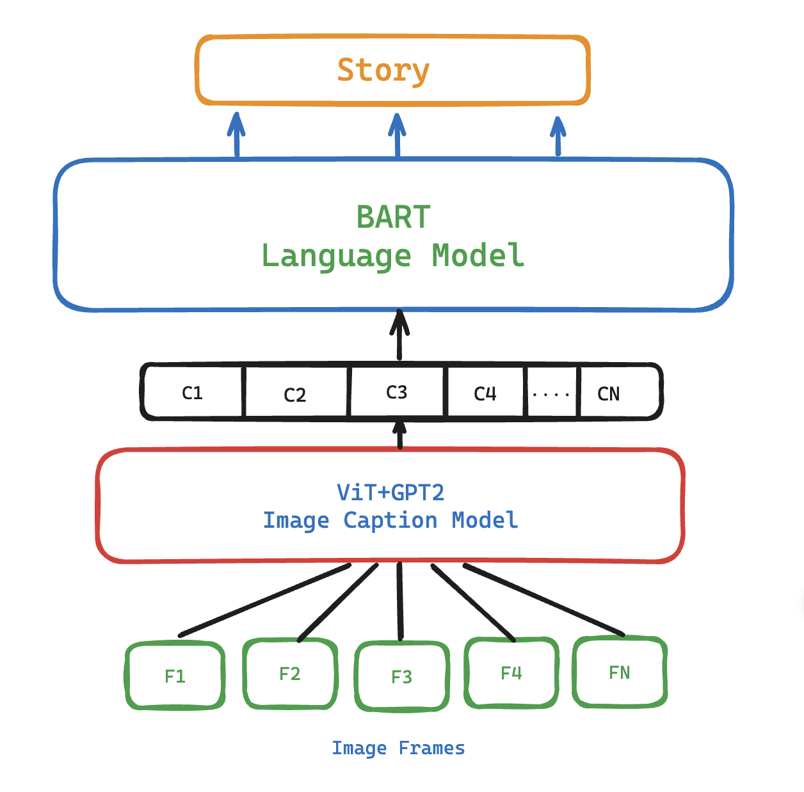
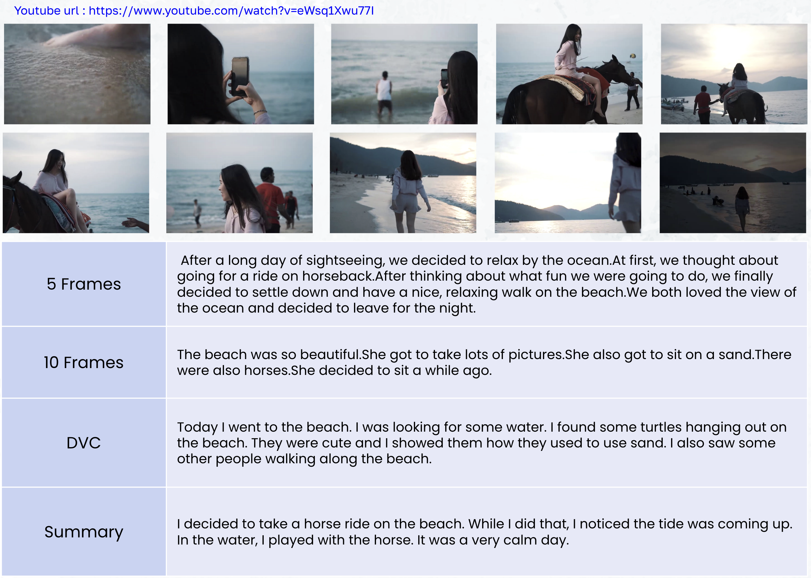

About Video Storytelling
Video storytelling is a cutting-edge method that transforms videos into captivating narratives by blending visual elements with natural language processing. Using advanced deep learning models and algorithms, it extracts key scenes, understands context, and creates engaging stories that resonate with audiences.
This innovative approach opens new avenues in entertainment, education, marketing, and beyond. To support research in this field, we've curated the Short Storytelling Video Dataset, containing 150 videos from diverse sources, each lasting 1 to 1.5 minutes, offering a valuable resource for exploring video storytelling techniques.
Model Architecture
This image represents the architecture of our model used in the video storytelling project. The model effectively processes the selected frames to generate compelling narratives.
Example Output
Here is an example of a generated story from selected video frames using our approach. The narratives produced are coherent, engaging, and contextually relevant, showcasing the effectiveness of our model in visual storytelling.